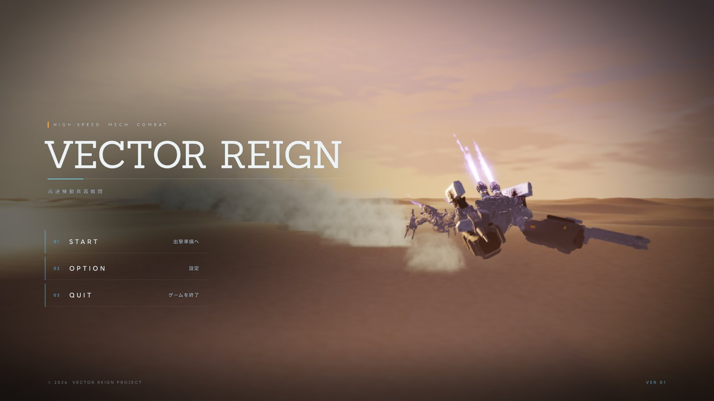
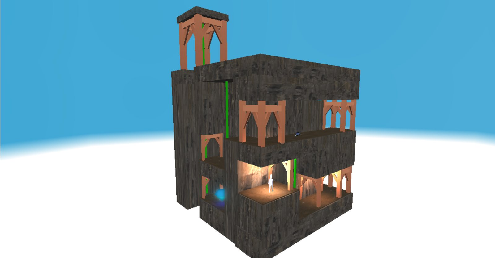

メイン作品 / 3D アクション
VECTOR REIGN
DirectX 12 の自作エンジンで動く、3D 高速メカアクション。エンジン・エディター・ゲームを約1年かけて個人で開発し、4,000 体の群れでできた巨大ボスとの戦いまで遊べる形に仕上げました。ベースと設計は自分で作り、UI の調整などの一部に AI を活用しています。
作品を見る →ゲームプログラマー志望
ゲームプログラマーを目指す制作者のポートフォリオ
01
自己紹介
C++ と 3D ゲームプログラミングを軸に、DirectX 12 の自作エンジンでゲームを作っています。 描画だけでなく、ECS やジョブシステム、エディターまで一通り自分で作ってきました。
強みは、読みやすく保守しやすいコードを意識して書けることです。 ほかの人が見てすぐ理解できる形を、チーム制作でも個人制作でも心がけています。
プロフィール詳細 →02
制作したゲーム

メイン作品 / 3D アクション
DirectX 12 の自作エンジンで動く、3D 高速メカアクション。エンジン・エディター・ゲームを約1年かけて個人で開発し、4,000 体の群れでできた巨大ボスとの戦いまで遊べる形に仕上げました。ベースと設計は自分で作り、UI の調整などの一部に AI を活用しています。
作品を見る →
メイン作品 / 2.5D アクション
宙に浮かぶ箱庭を、2D アクションの操作感で登っていくゲーム。Catmull-Rom スプラインに沿った移動とカメラワークで、世界を探索している感覚を目指しました。
作品を見る →03
VECTOR REIGN を動かしている DirectX 12 エンジン

自作エンジン紹介
描画は DirectX 12、ゲーム内のオブジェクト管理はアーキタイプ型の ECS、並列処理はジョブシステムで作りました。表現を広げても重くならないよう、処理負荷を意識して約1年かけて開発しています。
エンジン紹介を見る →04
お問い合わせ
ご覧いただきありがとうございます。